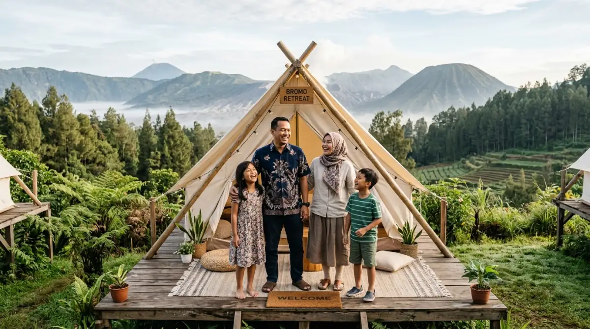
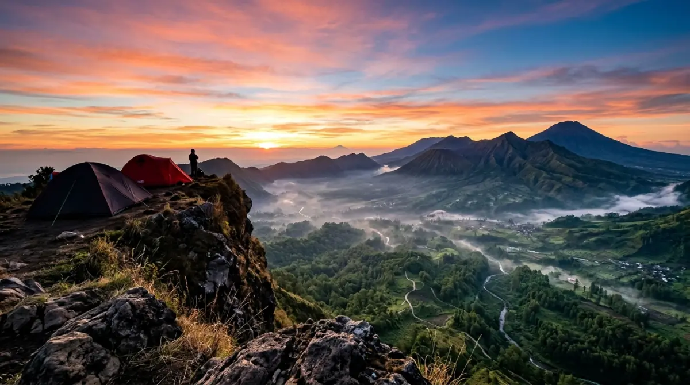

Keluarga menikmati camping dreams di kawasan sejuk Kota Batu — momen kebersamaan yang tak ternilai harganya.Pernahkah kamu menghitung berapa banyak akhir pekan yang terlewat begitu saja di depan layar laptop atau terjebak kemacetan kota? Waktu berlalu sangat cepat. Anak-anak semakin besar, pasangan butuh penyegaran, dan lingkar pertemananmu makin sibuk dengan rutinitas masing-masing.
Terus-menerus menunda liburan karena alasan "repot" hanya akan menyisakan penyesalan di kemudian hari. Kamu pasti sering melihat video estetis di media sosial dan menyimpan camping dreams yang tak kunjung terealisasi, bukan? Jangan sampai momen berharga untuk membangun kedekatan dengan orang tersayang hilang begitu saja karena kita terlalu sibuk mengejar tenggat waktu.
Udara sejuk pegunungan dan panorama matahari terbit sudah menantimu. Mewujudkan impian ini sebenarnya tidak sesulit mempresentasikan laporan akhir bulan di depan bos. Kamu hanya perlu tahu cara cerdas merencanakannya, tanpa harus pusing memikirkan tiang tenda yang patah atau kompor portabel yang mogok di tengah malam.
Mengapa Harus Batu untuk Mewujudkan "Camping Dreams"?
Bicara soal camping dreams, lokasi adalah segalanya. Kamu tidak bisa sekadar mendirikan tenda di lahan kosong yang panas dan berharap mendapatkan pengalaman magis. Di sinilah kawasan dataran tinggi Batu dan sekitarnya (termasuk area lereng pegunungan Malang) mengambil peran sebagai panggung utama.
Secara geografis, elevasi kawasan Batu memberikan jaminan udara sejuk yang tidak bisa kamu dapatkan di tengah hiruk-pikuk kota metropolitan seperti Jakarta atau Surabaya. Bayangkan, setelah berhari-hari paru-parumu menghirup polusi udara dari knalpot kendaraan, kamu akhirnya bisa meresap aroma khas daun pinus yang basah karena embun. Ini adalah terapi alami yang jauh lebih efektif daripada sekadar ngopi di coffee shop ber-AC saat istirahat kantor.
Selain itu, kontur alam Batu sangat mendukung untuk mendapatkan visual estetis. Area ini dikelilingi oleh lanskap pegunungan yang megah, seperti Gunung Arjuno dan Gunung Panderman. Lanskap inilah yang menjadi kanvas sempurna untuk berburu matahari terbit.
Kamu tidak perlu menjadi seorang ahli geografi untuk menyadari bahwa kontur berbukit ini memberikan sudut pandang tak terhalang (unobstructed view) menuju ufuk timur. Menyaksikan semburat jingga perlahan naik dari balik gunung adalah sebuah kemewahan yang membuat segala penat dari tumpukan pekerjaan langsung menguap.
Check-list Merencanakan Kemah Estetik Tanpa Stres
Menjalani liburan kemah seharusnya menjadi momen relaksasi, bukan simulasi bertahan hidup atau latihan militer. Kesalahan terbesar para pemula adalah menyamakan camping dreams yang santai dengan ekspedisi alam liar. Agar liburanmu tetap waras dan menyenangkan, perhatikan beberapa fondasi utama ini:
1. Pilih Lokasi yang Punya Fasilitas "Manusiawi"
Mari kita jujur, salah satu alasan mengapa banyak ibu-ibu, pasangan, atau bahkan anak muda ragu untuk berkemah adalah urusan kamar mandi. Tidak ada yang mau harus berjalan jauh di tengah gelap malam atau kebingungan mencari air bersih. Oleh karena itu, memastikan lokasi perkemahan memiliki toilet yang layak, bersih, dan dekat adalah harga mati.
Memilih campsite itu mirip seperti memilih gedung kantor. Sebagus apa pun desain interior kantormu, kalau AC-nya mati dan toiletnya kotor, kamu pasti tidak akan betah bekerja berlama-lama, kan? Begitu juga dengan kemah. Carilah lokasi di Batu yang memang didesain ramah anak dan keluarga (family-friendly). Tempat yang menyediakan akses air bersih melimpah, penerangan jalan yang cukup, dan area parkir yang tidak terlalu jauh dari titik tenda. Ini memastikan bahwa anak-anak aman bermain, dan orang dewasa tidak perlu menguras tenaga hanya untuk memindahkan barang dari bagasi mobil.
2. Fokus pada Momen, Bukan Kerepotan Logistik
Pernahkah kamu dihadapkan pada proyek lintas departemen di kantor tanpa adanya brief atau panduan yang jelas? Sangat kacau dan menguras emosi, bukan? Nah, mencoba mendirikan tenda dome berukuran besar untuk pertama kalinya bersama keluarga tanpa pengalaman sebelumnya bisa memberikan tingkat stres yang sama persis.
Banyak orang yang ingin mewujudkan camping dreams namun terjebak pada ambisi menyiapkan segalanya sendiri. Mulai dari membeli tenda mahal yang akhirnya hanya dipakai setahun sekali, mencari kayu bakar, hingga merakit kompor.
Alih-alih menikmati waktu bersama, ujung-ujungnya malah saling menyalahkan karena tenda miring atau makanan gosong. Mengurangi beban logistik adalah kunci agar kamu dan rombongan bisa benar-benar duduk santai, mengobrol, dan menikmati suasana sejak menit pertama kalian tiba di lokasi.
3. Amankan Spot Sunrise Terbaik
Matahari terbit adalah primadona dari setiap liburan kemah di dataran tinggi. Namun, spot yang bagus biasanya selalu menjadi incaran banyak orang. Saat merencanakan perjalanan, carilah informasi akurat atau tanyakan kepada pengelola tempat mengenai posisi tenda terbaik untuk melihat sunrise.
Kamu butuh posisi yang menghadap ke timur dengan area pandang yang terbuka. Momen ini durasinya sangat singkat, hanya sekitar 15 hingga 30 menit dari langit mulai terang hingga matahari benar-benar naik. Kamu tentu tidak ingin momen emas ini terhalang oleh tenda tetangga atau pepohonan rindang hanya karena salah memilih titik pitching tenda.

Mewujudkan camping dreams di alam Batu — udara sejuk, panorama pegunungan, dan momen kebersamaan yang tak terlupakan.Momen Magis yang Wajib Ada dalam Agenda Kemahmu
Sebuah camping dreams tidak akan lengkap tanpa aktivitas pendukung yang membekas di ingatan. Di tengah udara Batu yang bisa turun hingga belasan derajat Celsius di malam dan pagi hari, ada dua ritual wajib yang pantang dilewatkan.
Ngopi Pagi Sambil Menunggu Matahari Terbit
Ini adalah momen spiritual bagi para pekembah. Bangun sekitar pukul 05.00 pagi, mengenakan jaket tebal, dan keluar tenda merasakan udara segar yang menyentuh wajah. Menyeduh kopi panas atau teh hangat di tengah suasana yang masih sepi dan remang-remang memiliki sensasi yang tidak bisa dijelaskan dengan kata-kata.
Sambil menggenggam cangkir yang menghangatkan telapak tangan, kamu dan pasangan atau teman-teman bisa duduk berjajar menghadap ke arah lembah. Perlahan, langit yang gelap berubah warna menjadi perpaduan ungu, merah muda, dan oranye keemasan. Tidak perlu banyak bicara. Cukup nikmati transisi alam tersebut. Ini adalah mindfulness sejati, sebuah jeda berharga dari rentetan notifikasi grup WhatsApp kantor yang biasanya tidak pernah tidur.
Sesi Curhat Sambil Pesta BBQ di Malam Hari
Saat matahari tenggelam dan kegelapan mengambil alih, pusat aktivitas akan berpindah ke perapian atau area kompor. Mengadakan sesi Barbeque (BBQ) sederhana adalah cara terbaik untuk mencairkan suasana. Bau daging sapi yang dipanggang, sosis yang merekah, berpadu dengan udara dingin pegunungan adalah kombinasi yang menggugah selera.
Kegiatan memanggang makanan secara komunal ini secara psikologis menurunkan dinding pertahanan emosional seseorang. Orang-orang cenderung lebih terbuka, lebih santai, dan banyak tertawa saat berkumpul mengelilingi sumber panas dan makanan. Momen inilah yang sering melahirkan percakapan-percakapan bermakna yang jarang terjadi di rumah. Mulai dari nostalgia masa kecil, menertawakan kelucuan anak, hingga sekadar berbagi cerita ringan yang menguatkan ikatan (bonding).
Solusi Cerdas: Serahkan pada Ahlinya, Kamu Tinggal Menikmati
Pada akhirnya, kita harus kembali pada realitas bahwa waktu senggang kita sangat terbatas. Kamu mungkin sangat menginginkan semua estetika dan momen di atas, tapi secara realistis, tenaga dan waktumu sudah habis terkuras untuk urusan pekerjaan dan rutinitas harian.
Mengurus perlengkapan kemah dari nol itu ibarat menginstal sendiri perangkat lunak komputer (software) perusahaan yang rumit tanpa bantuan tim IT. Bisa saja dilakukan, tapi memakan waktu, rawan gagal, dan sangat membuat frustrasi. Untungnya, saat ini ekosistem wisata di Batu dan Malang sudah sangat maju.
Cara paling cerdas dan praktis untuk mewujudkan camping dreams tanpa pusing adalah dengan memanfaatkan layanan paket camping yang terpercaya. Dengan memilih paket ini, semuanya sudah diurus oleh para profesional. Tenda estetis yang luas dan kedap air sudah berdiri tegak lengkap dengan kasur busa empuk, selimut hangat, dan lampu-lampu penerangan yang cantik. Bahkan, urusan perlengkapan makan, alat BBQ, hingga api unggun sudah disiapkan.
Kamu dan rombongan secara harfiah hanya perlu datang membawa pakaian ganti, bahan makanan yang ingin dimasak, dan senyuman. Tidak ada drama tiang tenda patah, tidak ada punggung sakit karena tidur beralaskan tanah, dan tidak perlu pusing membersihkan semua peralatan setibanya di rumah nanti. Ini adalah bentuk investasi pada kenyamanan dan peace of mind.
Penutup
Pekerjaan akan selalu ada, email klien akan terus berdatangan, dan rutinitas kota tidak akan pernah berhenti. Namun, usia anak-anak yang masih ingin diajak bermain bersama, kesehatan fisik kita untuk menjelajah alam, serta kesempatan untuk tertawa lepas bersama pasangan, memiliki batas waktunya sendiri.
Menyaksikan kemegahan alam bersama mereka adalah serpihan kenangan yang akan selalu kalian bawa hingga tua nanti. Jangan biarkan rencana camping dreams ini hanya sekadar menjadi angan-angan yang berakhir di folder bookmark media sosialmu.
Ambil kalendermu sekarang, tentukan tanggalnya, dan izinkan dirimu sejenak menjauh dari bisingnya dunia. Karena pada akhirnya, memori yang indah tidak diciptakan dari seberapa keras kita bekerja, melainkan dari seberapa hadir kita untuk orang-orang yang kita cintai.
FAQ — Camping Dreams di Batu